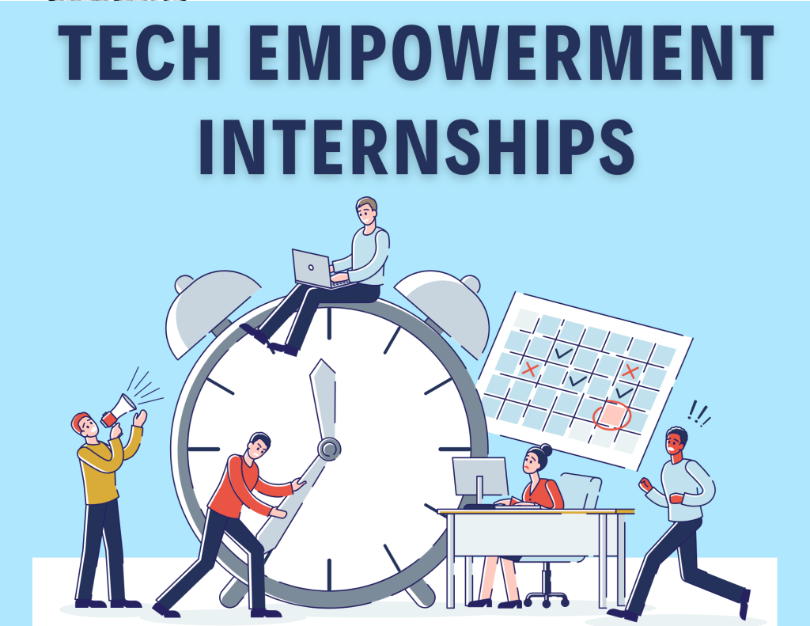

Internships
My internships have been pivotal in shaping my understanding and skills in the field of
technology and digital solutions. At Silspro Pvt Ltd, I worked as a JavaScript Technical Intern for six
months, from October 2022 to March 2023. This role allowed me to dive deep into the world of digital
e-learning solutions and personalized learning programs. I utilized technologies like JavaScript, HTML, CSS,
and MS Access Database to work on critical modules such as user registration and generating user
registration reports. This hands-on experience not only enhanced my technical proficiency but also taught me
the importance of user-centric design and effective communication with senior team members.
Following this, my stint at Squadron Infra and Mining Pvt. Ltd. introduced me to an environment brimming
with innovative possibilities. Here, I learned to see every challenge as an opportunity to innovate and make
a significant impact. The culture of imagination and creativity at Squadron resonated with my passion for
pushing boundaries and exploring new horizons.
Finally, my time at KRG Technologies India Pvt Ltd was equally transformative, reinforcing the limitless
potential of technology. This internship underscored the importance of combining technical skills with
creativity to leave a lasting mark. As a JavaScript Technical Intern for eight months from Dec 2023 to Aug
2024. This role allowed me to dive deep into the world of digital e-learning solutions and personalized
learning programs. I utilized technologies like Java, JavaScript, HTML, CSS, REST API , Hibernate, MySQL
RDBMS Database to work on critical modules such as user registration and generating user registration
reports. This hands-on experience not only enhanced my technical proficiency but also taught me the
importance of user-centric design and effective communication with senior team members. Each of these
internships was chosen not just to gain technical knowledge but to align with my vision of using technology
to create meaningful, long-term impacts in various sectors.